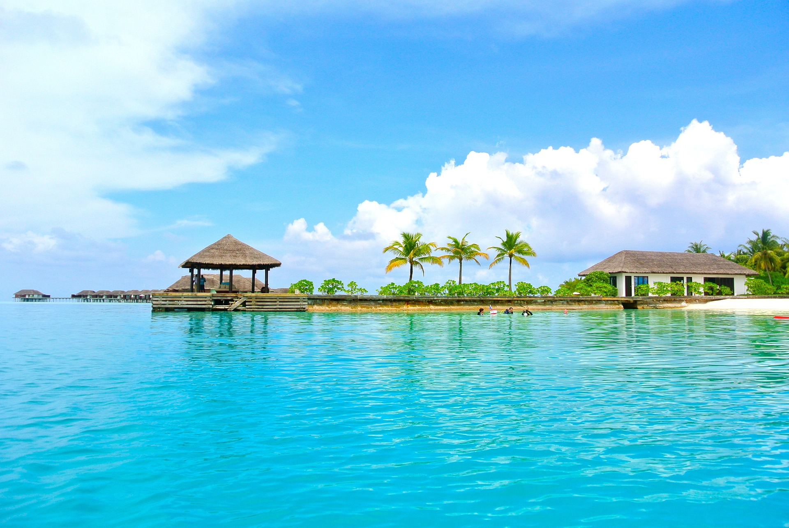

몰디브는 1972년경부터 관광업을 본격적으로 육성하기 시작했으며, 특히 작은 산호섬으로 이루어진 경관이 탁월하여 꿈의 여행지로 각광받는 곳이다. 전세계적으로 인기가 높을 뿐더러 한국에서는 신혼여행으로 더욱 인기가 높다.# 최근에는 너도 나도 가는 바람에 희소성이 조금 떨어진 감이 있지만, 그래도 여전히 가장 인기있고 비싼 신혼여행지 중 하나다.
몰디브는 천여 개의 작은 산호섬으로 이루어진 지리적 특성을 살려서, 하나의 섬을 통째로 하나의 리조트(One Island, One Resort)로 개발하여 영업 중이다. 그러므로 몰디브로 여행간다면 하면 여러 곳을 둘러보는 경우는 거의 없고 리조트가 있는 작은 섬에서 일정 전부를 보내는 경우가 거의 대부분이다. 아주 드물게 수도인 말레나 그 옆 훌룰레 섬에서 묵으면서 근처 섬을 왔다갔다 하는 여행자도 없는 것은 아니나 그다지 추천하는 코스는 아니다.
즉 몰디브로 여행을 간다고 하면, 대부분의 관광객은 말레 국제공항에 내려서 스피드보트, 수상비행기 또는 국내선 비행기 등으로 갈아타고 예약된 리조트(섬)로 이동한 후 그 곳에서 제공되는 식음료와 액티비티 등을 즐기며 시간을 보내는 패턴이 대부분이다. 당연히 리조트 직원을 제외한 현지인을 접할 일은 별로 없다.[8]
